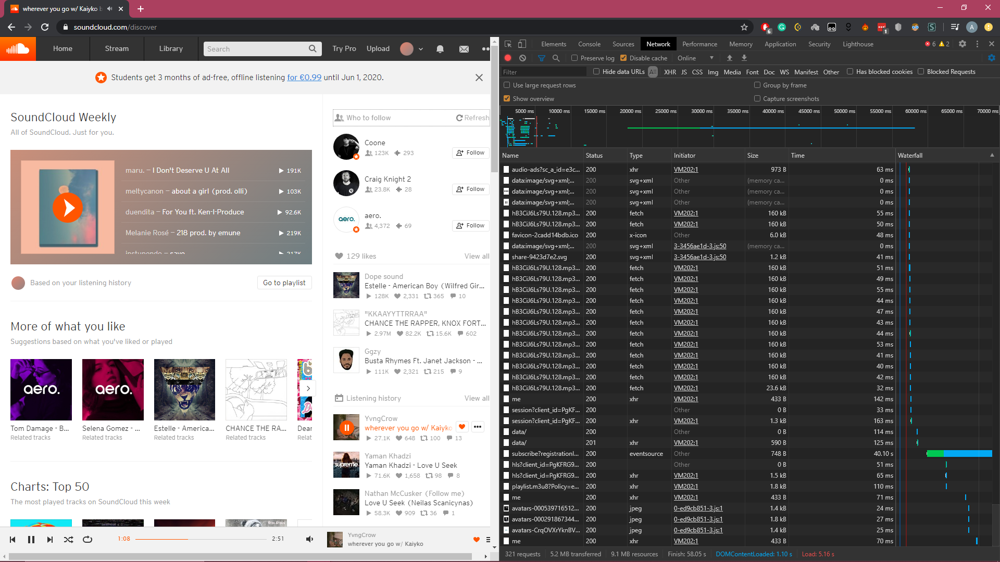

Getting Started¶
Installation¶
To install PySoundCloud use pip
$ pip install pysoundcloud
The wheel file can also be downloaded from here on GitHub and the source code from the GitHub repo.
Basic Usage¶
To start using PySoundCloud simply import the Client and insert your client ID from the SoundCloud API.
from pysoudcloud import Client
client = Client("xxxxxxxxxxxxxxxxxxxxxxxxxxxxxxxx")
Client ID¶
SoundCloud has stopped providing keys to be used with their API, however you can still obtain one in three easy steps:
Step One¶
Open the SoundCloud website and open the developer tools, or equivalent in other browsers (Chrome: F12 or Ctrl+Shift+I, Edge: F12) and head over to the network tab. You should have a lot of requests showing up. If you don’t, then just refresh the page.
Step Two¶
In the networking tab, at the top, search for client_id and select any of the results that contains it.
Step Three¶
In your results, there should be a request like this:
https://api-v2.soundcloud.com/me/play-history/tracks?client_id=PgKFRG98vbasF0IWR0AuZ09A4Tg•••••limit=25&offset=0&linked_partitioning=1&app_version=1591082147&app_locale=en
So from this, my client ID is PgKFRG98vbasF0IWR0AuZ09A4Tg•••••, which can be used in the code like this:
client = Client("PgKFRG98vbasF0IWR0AuZ09A4Tg•••••")